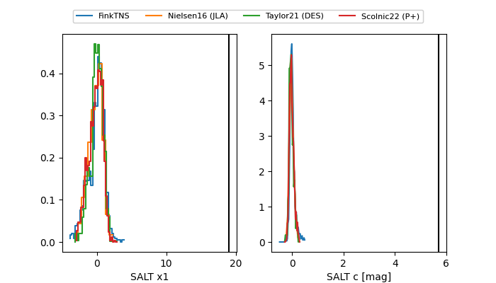

FINK: ZTF25abfzyak
Lasair: ZTF25abfzyak
ALeRCE: ZTF25abfzyak
ZTF25abfzyak (ztf,fink)
equatorial (ra, dec) = (304.4142,+13.09439)
galactic (l, b) = (54.8666,-12.42521)

last atlaso=17.79, ztfr=19.36
2 atlaso, 2 ztfr detections